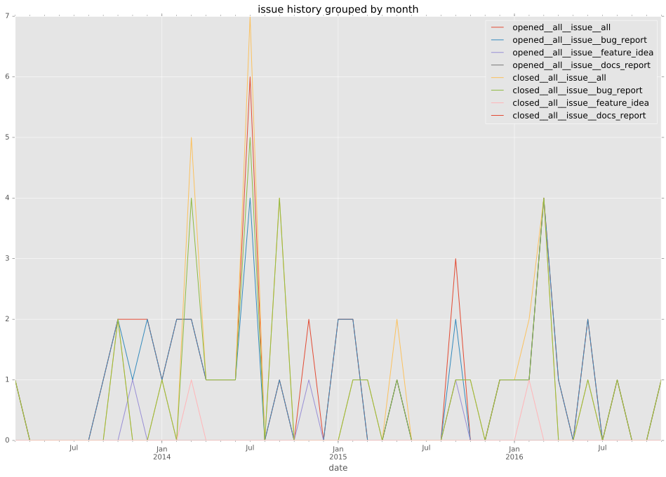
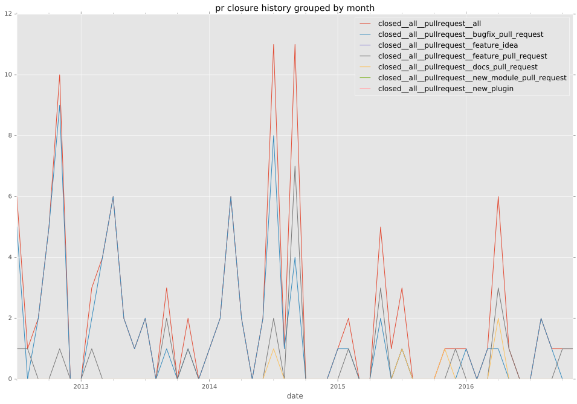

authors
maintainers
- Jmainguy
contributors
- abondis : 11 commits
- risaacson : 5 commits
- mattclay : 3 commits
- asad-at-srt : 1 commits
- jpmens : 4 commits
- resmo : 3 commits
- wtanaka : 1 commits
- damianmoore : 6 commits
- hyperized : 8 commits
- mpdehaan : 2 commits
- towolf : 11 commits
- mavimo : 8 commits
- fdupoux : 11 commits
- sorenk : 1 commits
- jctanner : 10 commits
- bcoca : 1 commits
- gundalow : 1 commits
- mscherer : 7 commits
- Jmainguy : 23 commits
- aioue : 1 commits
- gkoller : 2 commits
- ghjm : 2 commits
- d3prof3t : 6 commits
- abadger : 24 commits
- sivel : 1 commits
- dhozac : 1 commits
- georgeOsdDev : 1 commits
- Ernest0x : 5 commits
- marktheunissen : 28 commits
- scottbrown : 1 commits
total issue counts
feature pull request: 27
docs report: 1
pullrequest: 116
docs pull request: 6
bugfix pull request: 83
feature idea: 3
issue: 45
bug report: 41
issue history

pullrequest history

days open by issue type
bugfix pull request
count: 131
std: 26.9179567315
min: 0
max: 126
median: 0.0
mean: 9.97709923664
all
count: 216
std: 60.2804813693
min: 0
max: 319
median: 1.0
mean: 27.1111111111
pullrequest
count: 0
std: nan
min: nan
max: nan
median: nan
mean: nan
docs pull request
count: 10
std: 23.0383737852
min: 0
max: 61
median: 3.5
mean: 15.9
docs report
count: 1
std: nan
min: 3
max: 3
median: 3.0
mean: 3.0
feature pull request
count: 35
std: 88.6603565498
min: 0
max: 319
median: 18.0
mean: 62.4
feature idea
count: 2
std: 24.0416305603
min: 126
max: 160
median: 143.0
mean: 143.0
issue
count: 0
std: nan
min: nan
max: nan
median: nan
mean: nan
bug report
count: 37
std: 88.3688098061
min: 0
max: 301
median: 1.0
mean: 51.8108108108
closures grouped by total days open